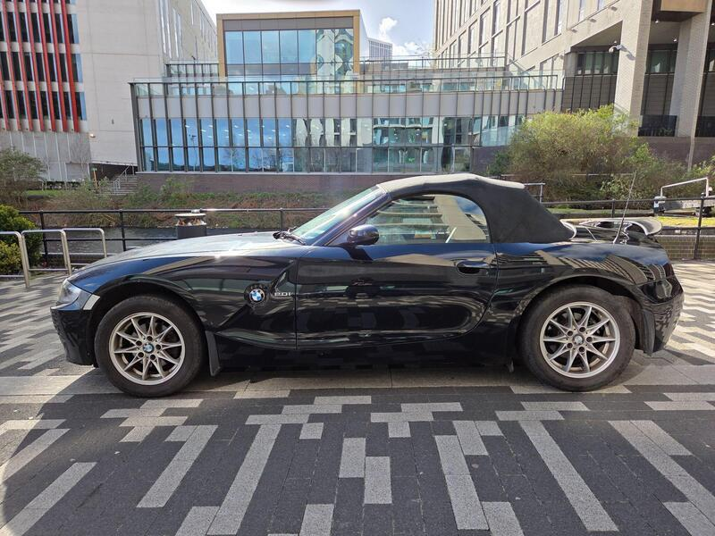
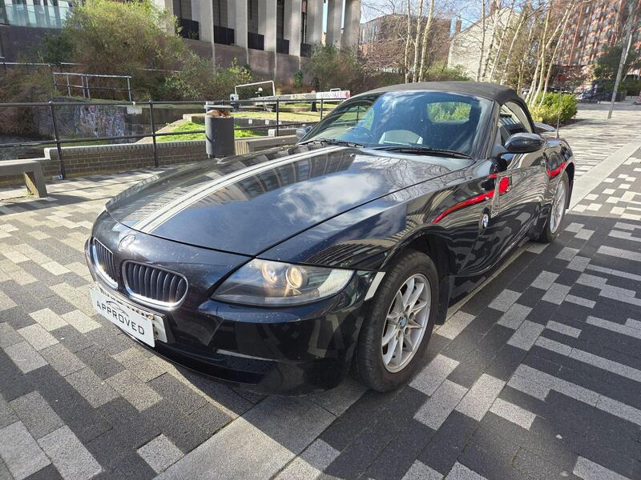
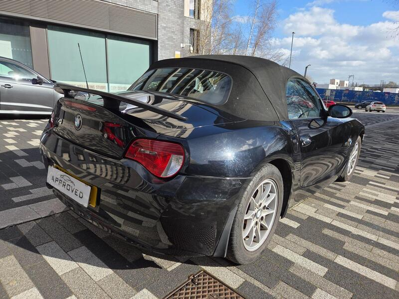
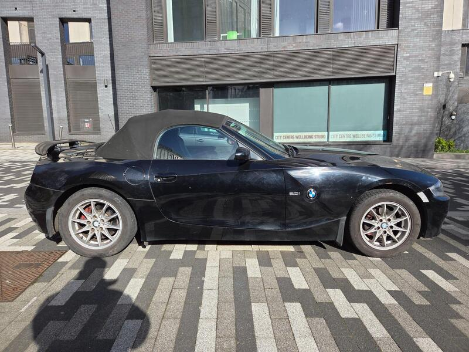

Seller photos from the AutoTrader ad.
BMW Z4 2.0i SE
A low-mileage Z4 with its chain sorted. One of the best-value roadsters here.
Key facts
| Price | £1,999 |
|---|---|
| Year | 2007 |
| Miles | 83,000 |
| Model | BMW Z4 2.0i SE |
| Colour | Black |
| Registration | 2007 (57 reg) |
| Service history | Not stated |
| MOT (seller's text) | March 2027 (ad) |
| Seller | Trade |
| Location | Birmingham |
| From GU7 | 106 mi (AutoTrader) |
| Checked | 15 October 2026 |
Why buy it
- Full service history, timing chain and water pump done (ad)
- Only 83k miles, manual
Things to check
Trade seller 106 mi away
Check the roof motor and the rear brake lines
- BMW Z4 E85 weak spots
Body resists rot well; rear brake lines corrode; occasional rear-arch blisters. Roof motor flooded by a blocked drain (dealer ~€1,200–1,500, specialist €200–400); cooling plastics (expansion tank, thermostat, water pump).
Seller says (extract)
“BMW Z4 2.0I PETROL MANUAL SE 2DR NO ISSUES WITH THE CAR MECHANICALLY 100% HPI CLEAR NEVER BEEN INVOLVED IN ANY ACCIDENTS ULEZ COMPLIANT FREE TO DRIVE IN CONGESTION ZONES MOT MARCH 2027 PEACE OF MIND FOR NEXT OWNER TIMING CHAIN WATERPUMP HAS BEEN DONE PIECE OF MIND FOR NEXT OWNER FULL SERVICE HISTORY LOW MILEAGE ONLY 83,000 MILES (VOSA APPROVED) CHEAP ON INSURANCE VERY GOOD ON FUEL GOOD RUNNER RADIO CD PLAYER AUX - AIR CONDITIONING - CLIMATE CONTROL - FOLDING REAR SEATS - ELECTRIC WINDOWS - ANTI LOCK BRAKES (ABS) - HALF LEATHER SEATS, REAR PARKING SENSORS THIS VEHICLE HAS A REAR SPOILER AND HAS BEEN LOWERED FROM THE FRONT SHE IS A REAL HEAD TURNER LOOKS ASTONISHING (WE HAVE CHANGED THE FRONT SHOCKS BACK TO NORMAL SHE WAS SITTING TO LOW) NATIONWIDE HOME DELIVERY AVAILABLE (FREE DELIVERY UP TO 20 MILES) TERMS & CONDITION APPLY SAME DAY DELIVERY CAN BE ARRANGED…”